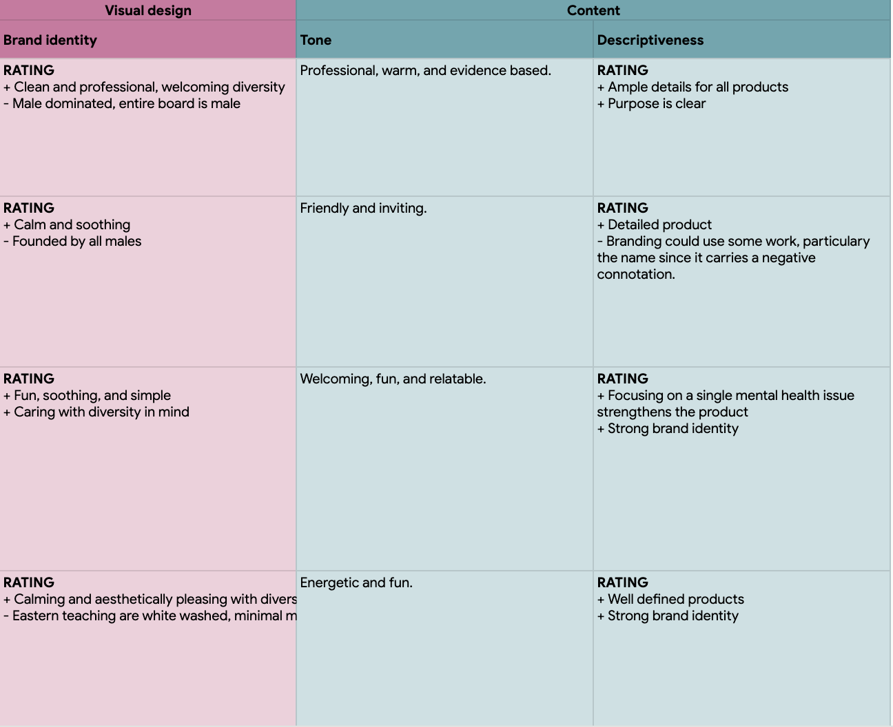
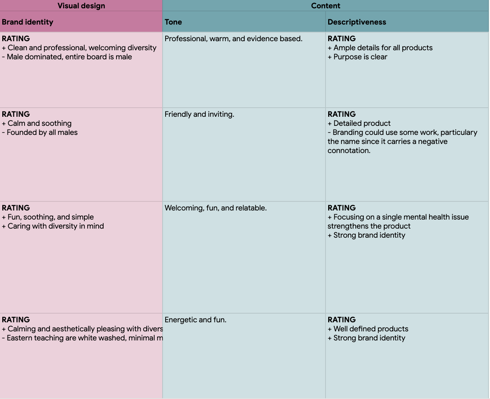
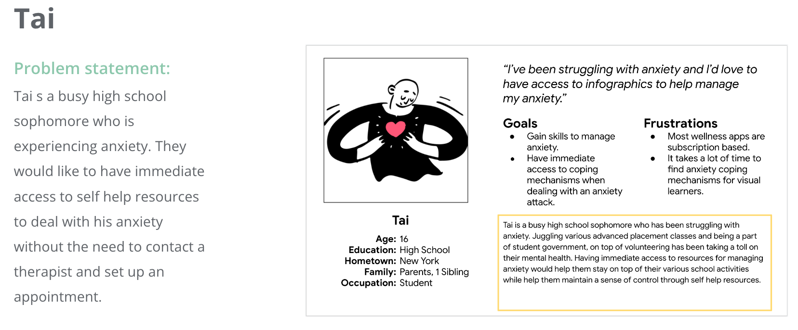
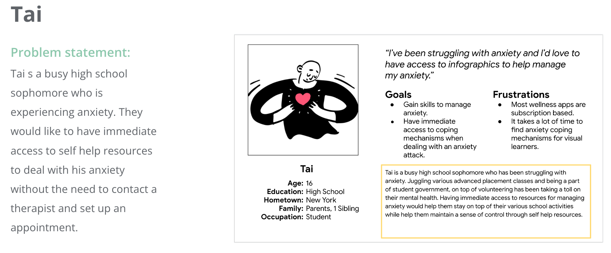
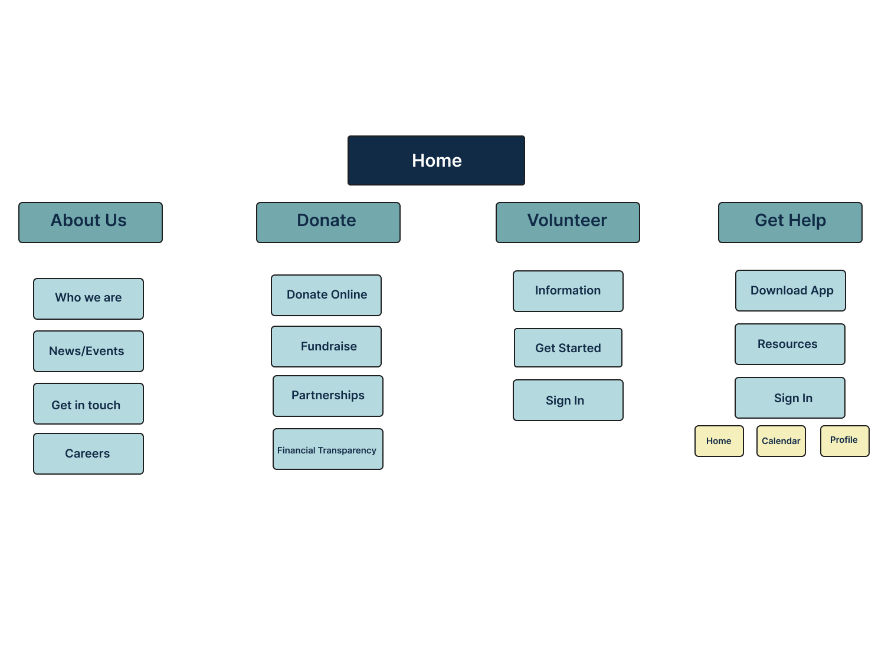
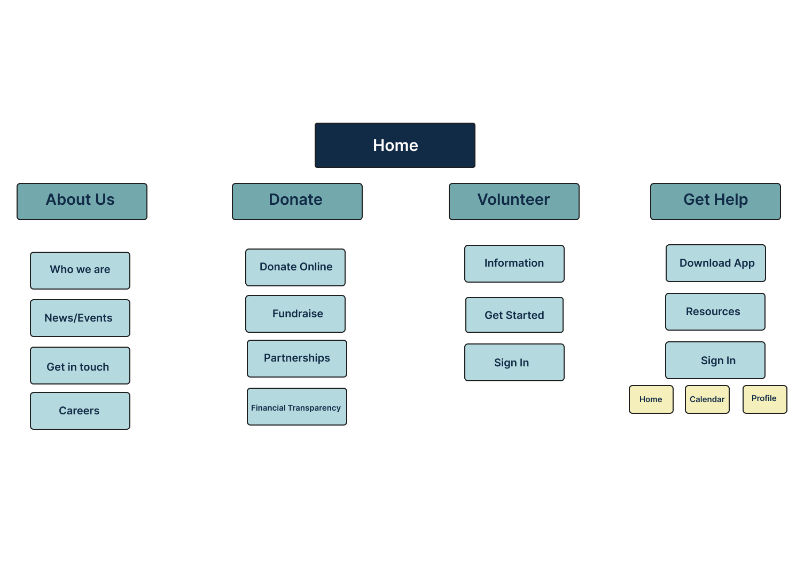

Mental Health Mobile App + Responsive Website
Overview
User Research
Design
Usability Studies
The Feel app's is a digital community space, a resource center, and a mental health service provider for poc youth.
Poc youth face significant barriers to mental health resources due to racial disparities and there are no free mental health apps tailored to the experience of poc youth.
Create an app, for poc youth, that provides free access to mental health services and resources.
Research
Summary
The research conducted for this project is split into two sections one for the product and another for the user. For instance, the product research is composed of a competitive audit and its respective report, which informs market gaps. While the user research is based on interviews and demographic data. It informed the development of the initial user pain points and the personas. Ultimately the goal of research is to empathize with users and define product problems.
Product
Without a tangible product, but with access to numerous direct competitor apps, conducting a competitive audit as part of the product research was the best route. The information that was gathered is consolidated in the competitive audit and an analysis of it is presented in the competitive audit report.
The competitive audit takes into account three direct and one indirect competitor. Three of which are medium sized companies and one large company. A quick glance at the audit below will give you a more in depth understanding of each competitor.

 

The competitive audit analysis demonstrated three major opportunities. One is that the mental health field can benefit from a growth in inclusivity. While the second opportunity is providing users with access to a product that provides free services. The final observation focused on ensuring that there is a product specifically tailored to the poc youth experience. Ultimately the user paint points below highlight the most immediate users needs.
Direct: Youper
Direct: Better Stop Suicide
Direct: Calm Harm
Indirect: Headspace
Young adult audience
Not available in the U.S.
Niche feature/services
Inaccessible due to cost
1. Poc youth as target audience.
2. Accessible regardless of socioeconomic status.
3. Inclusivity
User
In order to gain general knowledge about the target audience, straightforward research on user demographics were conducted; alongside, user interviews. This research informed the development of the personas and the findings are summarized below.
User demographics research confirmed, initial assumptions, that primary users faced reduced access to mental health services due to numerous disparities; alongside, the fact that 98% of them own a smartphone and are between the ages of 13 - 19. The research also revealed that users in this age group seek to de-stigmatize mental health services. The findings that the target user is interested in an environment of inclusion with the needs of poc youth in mind, would benefit from tailored search options focused on unique identities, and offering various online mental health resources to create an app that meets the needs of the specific user population, poc youth., and offering various online mental health resources to create an app that meets the needs of the specific user population, poc youth.
 

The competitive audit analysis demonstrated and three major opportunities. One is that the mental health field can benefit from a growth in inclusivity. While the second opportunity is providing users with access to a product that provides free services. The final observation focused on ensuring that there is a product specifically tailored to the poc youth experience. Ultimately the user paint points below highlight the most immediate users needs.
Mental Health Field Lacks Inclusivity
Financial Burden: Cost of Therapy
Difficulty Finding Online Services Tailored to Poc Youth.
Lack of poc, lgbtq+, or culturally sensitive therapists.
Finding therapists that accept government provided health insurance consists of long waitlists.
There were no apps that solely focused on providing resources to poc youth.
Ideation
Prior to starting the design process, it's ideal to generate ideas. The purpose of this step is not perfection, but rather a sort of warm up to wire-framing. In this phase I decided to begin with the crazy 8's sprint method, followed by the creation of a user flow, and a user journey map.
Crazy 8's
The crazy 8's activity serves as a way to brainstorm the overall design of the app and responsive website. The app is made up of 8 sketches that explore the user journey by focusing on the menu, titles, and information layout. While the sketches for the website focus on the design of the landing page, particularly the navigation layout.
User Flow
The design of the user flow takes inspiration from how users interacted with competitors and is solely focused on the app, though it's tailored around the features that will be offered by the mental health app. The user flow serves as an outline for user navigation, which assists in implementing useful design solutions.
User Journey Map
The future states user journey map lays out the ideal path a user might take while navigating the app and is used to compare the various ways a user might achieve a desired goal to the “ideal” path.
Since the project is yet to be developed I opted for creating a future state user journey map. It's a way of illustrating the ideal user journey for a product that doesn't exist. It also provides a design direction. The future state journey map is a culmination of the initial planning of the design direction for the product. There will be a lot more iterating in the design phase.
Design & Evaluation
This section covers a significant portion of the case study, since it provides visual examples and design iterations of the product. It is composed of four major sections: the site map, wireframes, a usability study, and prototypes. At the end of the design and evaluation processes the outcome is a functional user friendly design.
Site Map
Prior to the wire-framing I find it useful to focus on the information architecture by creating site maps. For this project, two distinct sitemaps were created one for the app and another for the responsive website. Both of which have the goal of assisting with and ensuring the design process runs smoothly.
The site map sets up the information architecture for the website and expedites the design process by informing the wireframes. It's not a fixed entity and will continue to evolve throughout the design process.
 

Wireframes & Low Fidelity Prototypes
The items in this section exemplify iterating through a design. Starting off with paper wireframes, which get the design ball rolling and serve as a form of brainstorming. Followed by the development of more refined versions, the lo-fi digital wireframe and the lo-fi prototype. The prototype will be used for testing, resulting in further improvements to the design. Ultimately, the more issues this early on in the design process the better.

 LoFi Website Prototype in Figma
LoFi Website Prototype in Figma
Usability Study
This section is a very iterative heavy phase, focused on testing and evaluating the design. The result is a hi-fi prototype, attaining as much similarity to a fully functioning product as possible.
There are two usability studies, one for the mobile app and another for the website. Both composed of the same guidelines, unmoderated and composed of six participants. Their structure is as follows: a usability research study plan, the usability notes, an affinity diagram, the findings, and a brief explanation on the design iterations that resulted from the study.
Usability Study: App
Creating a research plan prior to conducting usability research is an extremely useful practice. It helps set research expectations and serves as an overview of the study that can be referenced when needed. Overall, it provides a great starting point from which to begin thinking about the impact your usability research have.
The notes assist in keeping track of the user's experience as they move through the website, while also providing a way to consolidate information that results in useful findings.
Below are the results of one of the multiple users who were a part of the study.
The affinity diagram below consolidates and analyzes the observations collected from the usability study notes. It's a precursor to building insights on the observations and groups recurrent information.
 Usability STudy notes link
Usability STudy notes link
The affinity diagram above was used to identify user patterns and form insights regarding the products usability. Upon analyzing the information, 3 observations below were made.
Lack of cohesion in the filtering feature.
The carousel is an ineffective navigation tool.
Lack of visual indicators when interacting with action items.
5 out of 6 users had negative comments about the filtering feature. The lack of cohesion in the design of the filtering feature can be corrected by ensuring a single filtering design is used throughout the app resulting in familiarity.
6 out of 6 users had difficulties interacting with the carousel object. A solution to this issue would be to remove the carousel.
3 out of 6 users viewed being unable to edit the name in the billing section as inconvenient. This issue can be adjusted by ensuring there is a text box as opposed to just a text block.
Design iteration is where insights, identified through the analysis of the affinity diagram, are implemented to ameliorate user pain points. The changes made to the app design include: making sure all filtering features are consistent through the app by removing the search bar in all screens, removing a carousel which was detracting navigation ease, and adding interactive visual indicators to buttons throughout the design.
The two wireframes presented below illustrate changes made to the UI while finalizing the design. More than anything these changes are aesthetic and constitute a minor rebranding.
Usability Study: Responsive Website
The usability study for the website has a different structure due to the fact that the user needs differ from those of the app. For instance, it's focus is on users interested in learning about the company. The study includes a research plan, usability study notes, and the findings.
The usability study research plan below is an outline that breaks down the study into digestible sections and helps set research expectations. It makes referencing back to particular sections, while moving through the study is easier.
The usability study notes below are structured to bypass the need for an affinity diagram. Observations made during the usability study are categorized on the table as rows and the users take up the columns. Ultimately, accumulation of points on observations are what informed the user pain points.

The affinity diagram above was used to identify user patterns and form insights regarding the products usability. Upon analyzing the information, 3 observations below were made.
Below are the three insights collected from the usability study.
Header bar navigation issues
Repetitive pages
Lack of contrast in the sections layout
6 out of 6 users mentioned having difficulty with the navigation menu. Addressing the issue would result in ensuring the menu better reflects the subpages.
4 out of 6 users mentioned the Support Group and Therapist pages were repetitive. The design will be reworked by consolidating the pages into the Homepage; alongside, adding visual indicators for each section.
3 out of 6 users noticed a lack of contrast in the overall design layout. Having a flat design can be ameliorated by creating well defined contrasts between body sections with the use of color contrast ratios.
Design iteration is where the identified insights are implemented to ameliorate user pain points.
The changes made to the low fidelity website design include: making changes to the menu to best reflect user needs, consolidating two pages into one, and ensuring accessibility by prioritizing text clarity and color contrast.
Below are the wireframes for the responsive website, that cover the desktop and tablet screen sizes. After making the most immediate updates based on user feedback, I also decided to make changes to the background accent color. I retired the mint green color seen throughout the previous hifi wireframes and replaced it with the blue background seen on the menu and footer. Aside from purely aesthetic reasons, this change was made as a means to add a sense of unity between the page and its items.


The two images presented below illustrate changes made to the wireframes above, links to the prototypes are also provided. These changes are aesthetic and constitute a minor rebranding.

Conclusion
Final Product
Explore the product without having to leave the page by interacting with the section below.
Takeaways
The website's greatest influence is the social impact it will have on poc youth. With regards to design its impact lies in design familiarity.
Taking the time to carefully plan out wireframes leads to better use of time during the design iteration process.
"The different mental health aids provided on the app were really easy to find, the app just seemed familiar which made it easy to navigate ."
Next Steps
Run another usability study and examine the user feedback.
Iterate on the design based on user feedback.
Have in mind that user needs are constantly changing and the website's design will be constantly changing and therefore improving.